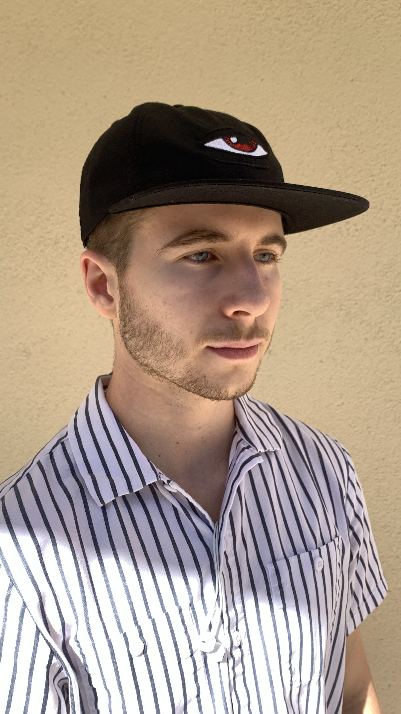
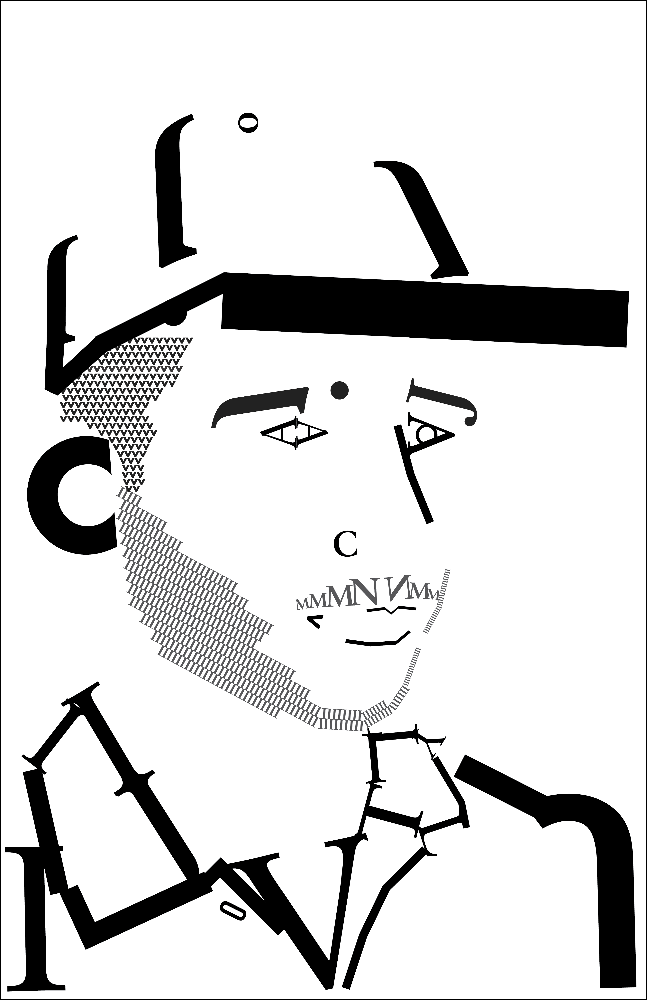
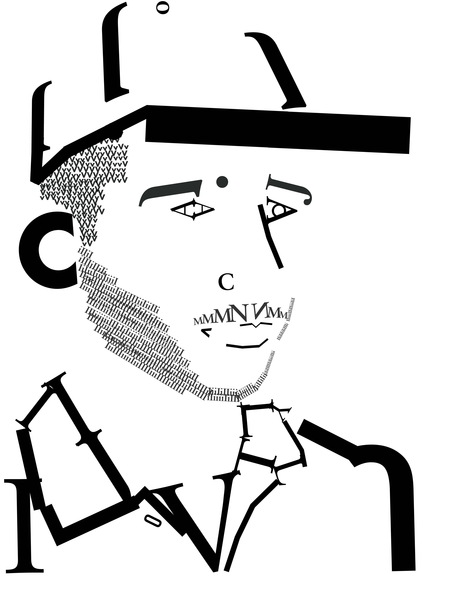

ART 226 — Graphic Design I, Fall semester 2022, Adobe Illustrator, Adobe Photoshop, 11x17 inches.
We were instructed to take pictures of ourselves from various angles. After we had chosen the photo, we thought was the best, we brought the image into Illustrator. Within this composition, I used the typefaces Futura and Sabon as my two pairings. I felt that I could create and add much more definition to my face with Sabon since the curves of the Rockwell font were too much like a typewriter and almost “Machined”, which was too similar to Futura. I used the gestalt principles to better create the shapes and contours of my face without using a piece of type for every little detail. Additionally, we were not able to use special characters such as numbers or punctuation. We were allowed to stretch the type in this assignment, however, I decided against it since I wanted to keep the type as natural as possible.
  